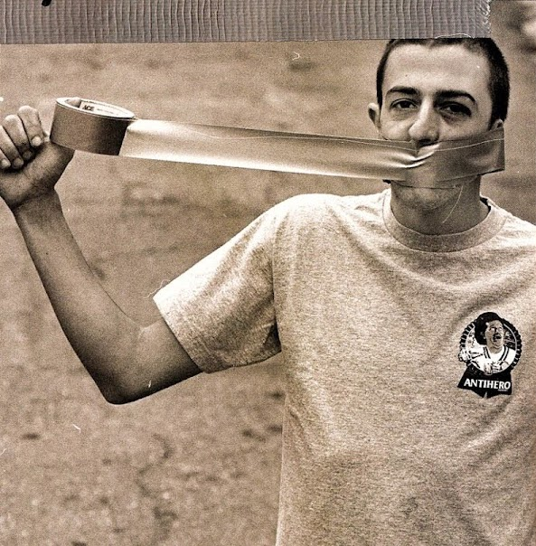

4PLY MAG
August 2021
Frank
Gerwer

By Harrison Lisewski
Frank's been on more trips than an acid-fried hippie and seems to remember every session like it was yesterday. If technology advances to the point that I can download people's brains I'll be downloading Frank's first for sure.
The skate industry equivalent of the Library of Alexandria.
An international treasure. I asked Frank which countries he'd been to and he started trying to list the countries he hadn't been to instead. There was England and then we got stuck on whether or not Alaska counts.
You want stats? 135lbs, 5'7", brown eyes, devilishly handsome. Want an interview? You got it.
What was the deal with Maiden Days?
Wow you found Maiden Days! Ok so Maiden Days was with that kid Kevin Candela and it was raining and he had one of those editing boards. It was like an old school Fisher Price my first editing board kinda thing and we both took our footage tapes and put them together and that was it, on a rainy day at his house. He was like ‘Dude I got the editing board! Bring over your tape’. So I was like ‘Alright, I'll bring it over’ and we went through like trick trick trick trick trick trick as much as we could.
It was sick, we only made like 3 or 4 copies of it. That kid Kevin’s part is really sick in that, he did this kickflip indie on that little quarter pipe, it’s really good. That’s funny that you found that.

Yeah I’ve been doing some digging. I found a 411 Metrospective in New York. You’re in it but there’s also a Lonnie Gerwer?
Yeah he does an ollie into the banks from uhh, this was years and years ago. He goes like top ropes into the banks right?
He definitely tried. Is that your brother?
No, no. It was just coincidence. I did talk to him about how we’re both Gerwers. Apparently we could be cousins, I don't know. It's funny, Lonnie Gerwer.
Who won the Newell chair race?
I would have to go with uhh, he had the low chair.. Jon Newport! I think he was the fastest. He was the gnarliest.
Did anyone get fucked up?
We almost fucked Dave Duren up but he kinda pulled it. He hit a house.
That’s when there was a cop watching and he was like 'You kids gotta get outta here before one of you gets hurt. and he let us race for like another hour. It was nuts. But I think Newport definitely won. He went from the highest of all the hills and that setup he had was nuts. He took I think it was a kitchen chair from his house and his friend AJ's cruiser board trucks, he cut the legs off and screwed them on and he put these weird stirrups on it. It was fucked. Yeah. He won. He truly won. He won, but he couldn't really barely speak at any point. He was having a tough time. That was good.
Are you filming for anything at the moment?
There’s a little Converse/Krooked thing that’ll be coming out in a couple months, that was the last thing and then we’re trying to do a little Grimple video along with the Antihero video. Like a more fun, goofier, whatever. Whatever Grimple is we’re gonna do that in video form.
What is Grimple?
What is Grimple? That’s one of those questions best left unanswered. I’m not sure.
It’s nice because being a fake team we get to use dudes like Evan Smith. Well not a fake team, a real team but we can do anything we want because we exist in a wormhole. That’s the best part, we don’t have to follow any strict rules of what skateboarding is or should be.
Top Tricks
So out of all the footage we logged, the trick you did the most was a kickflip.
Nice, I got some more coming. I guess it’s my favorite trick. I learned it in my garage in the winter holding onto two garbage cans. It was the first trick I ever learnt.
Classic.
So do you guys have a program for this stuff or what?
Sort of. Once we have all the data it's pretty smooth. Cataloguing everything is the hard part.
That's really cool. It's like, during a boxing fight they have someone who counts punches. Then they have someone who counts landed punches. Then they have someone who counts missed punches you know? I think from the dawn of time in baseball you could find out if the first pitch was a strike and you could just find out the craziest stats. For skateboarding it's rad. It might be useless to the civilian who’s not a skater, but like they're the nutjob baseball fans out there, they wanna know who hit 425 in 1967 or who holds the home run records and all this. It’s super rad that it could be cut down to like how many tricks in a part or like, what tricks you've done the most,
what your height and weight is. You know like ‘Weighing in at a buck 35’, I only weigh 135 pounds and I’m 5’6ish. Trying to sneak in the 7.
You should see the data we have on Beagle's hair. Insane.
Could you do a Gino one of these?
That would be awesome.
I think Gino would probably be one of the best. You’d have a lot of switch back tails, a couple switch back tail shuvs. It’d be good. The other day I was like ‘I think it's like 6 or 8 times that he pushes in his Trilogy part’. That was like some stupid thing I remembered from like being a kid and being like ‘Why would I fucking count how many times this dude pushes’. but then when I saw the Andrew Allen stats and there was like flannel stats and shit I was like ‘Yes! Fuck dude, thats awesome. I’m not the only one counting weird shit’. It's funny because you’re doing stats on like, Koston had probably 30 parts or something? And so you have to go back and watch like H Street Next Generation and then you have to watch Lick and then you know like, it brings you through a wormhole of videos that you have to watch.
He’s in a 101 video and he just kinda runs past the camera a couple times too in these crazy shorts, he keeps falling down and you’re like ‘Dude, that's Koston just running around in some purple shorts? This is insane.’
 Those videos are great. Those are the ones I know real good. Questionable, Virtual reality. Ronnie Creager would be an insane one to do dude. This is where you go wormholing. Because then you have to go through old Thrasher videos right, and almost start stats on like everyone, which would be insane.
Someone can be like how many manual tricks has he done? Oh, Koston 540 tail grab on a vert ramp you know. How many times was Beagle’s hair in a completely insane afro?
Those videos are great. Those are the ones I know real good. Questionable, Virtual reality. Ronnie Creager would be an insane one to do dude. This is where you go wormholing. Because then you have to go through old Thrasher videos right, and almost start stats on like everyone, which would be insane.
Someone can be like how many manual tricks has he done? Oh, Koston 540 tail grab on a vert ramp you know. How many times was Beagle’s hair in a completely insane afro?
*Frank has done 5 manual tricks
*Koston did a 540 tail grab on a vert ramp
*Beagle did 16 tricks with an insanely huge afro & 1 with a hat on
Yeah it's nuts. Normally we'll just log all someones parts but so much of your footage is spread across so many videos. Wormhole city.
Yeah I think I only have like one part, some 411 stuff and then the rest is like spitfire stuff and trip stuff.
I managed to track down a few.
My friend did make a part on vimeo called ‘Straight to Floppy Disk’.
Yeah there’s that and there's a 'part' on youtube just called ‘Frank Gerwer’ that has a bunch of footage I’d never seen.
Oh yeah some footage at night? Yeah somebody put together some footage, there’s like a library line in there right? That’s the funny thing I guess, when I'm out I don't really make a conscious effort to go film stuff, so a lot of it just ends up with different filmers.
OVER TIME
Your transition chart looks like some transition.
That'll be trips with Peter Hewitt. He’ll make you get in there. He's a good motivator.
*The spikes in 2006, 2015 & 2020 are from trip videos with Peter Hewitt. Having said that.. how many trips has Frank been on without Peter Hewitt?
Video Numbers
- 335 - Tricks logged across 31 videos
- 118 - Unique tricks
- 62 - Gap tricks (18.5%)
- 83 - Ledge tricks (24.7%)

- 29 - Tricks down stairs (8.6%)
- 37 - Flatground tricks(9%)
- 39 - Handrail tricks (11.6%)
- 29 - Switch tricks (8.6%)
- 19 - Transition tricks
- 4 - Manual tricks
- 4 flat 4 flat 4 - Biggest handrail

- 6 - Nosegrinds
- 13 - Noseslides
- 69 - Tricks on hills (20.5%)

- 3 - Nose manuals
- 3 - Nose blunts
- 6 - Hill bombs on a chair with wheels
- 3 - E-scooter tricks
- 1 - BMX trick
- 1 - Quad bike trick
Video Part Breakdown
It’s always cool to see who influences who, who influences the next dudes and then you know.. the dudes after that. Who would you say influenced you the most?
I was kinda sheltered so it was a lot of my friends that kinda influenced the direction of my skating and then obviously the Bones Brigade. Like no joke I thought those guys were the shit. I figured out how to stop mongo pushing from that video. I was like 'Hey wait, Lance skates the same way as me but he doesn’t push the same..' and then I immediately thought ‘He’s doing it wrong’.
Then I was like ‘Wait wait wait hold on, I just started this’ and I went back and rewound it and I was like ‘Oh they all push like that! Maybe I was wrong’. That was a big thing too, especially when you start skating, to push the right way or you know, not to look like you didn’t fit in as much as you didn’t. So I’d say the Bones Brigade members. Lance Mountain was a huge influence because he definitely had more fun and the other dudes took it more seriously. They're skating vert you know. I couldn't relate to Mike McGill or Tony Hawk at that age. They were lightyears ahead of me. I didn’t even know about vert ramps.
You know you’ve argued with your friends why dudes are better than other dudes. It’s always personal preference. That’s what makes skating great is everyone has personal favourites, like their dudes. My dudes are like Rick Howard, Mike Carroll, Plan B. Those dudes were like woo, mind blowing. Henry Sanchez. It’s the ultimate argument through skate history, who’s your favourite and why? Always trying to persuade your friend and make him think that your dude’s the best.
Your dudes are always the best dudes.
Yeah like Guy Mariano is the best hands down.
What about Gino?
Yeah, for sure. A dude from Long Island that was on 101 with Natas? Yeah. But that only came after like The Snuff video when you got to see his full capabilities.
Who’s the best distributor? And why is it Deluxe?
It’s the best because of how bad we are at it. Ahaha no it's because of Jim actually. It's because of how much Jim loves skating and wants everyone to do well. We all have an equal hand in skateboarding as we’ve been doing it so long. He just wants everyone to be stoked. I think that's why we do as well as we do. We’re not trying to be cool, we're just trying to bring some fun to people you know and put some good skateboarding out, which the Real team does and the Antihero team does and so does Krooked. Look at all the teams, do all of them have SOTYs? Real and Antihero do but Krooked has the goat, Mark Gonzales so you don’t need a SOTY if you got Mark Gonzales you know?
When are you gonna get SOTY?
I’m good, you know it's one of those things you accept that you’re not gonna win.
You got my vote.
I should start jumping off roofs I think.
If you were hanging off the top of the Empire State Building and Will Smith and The Rock put out their hand out to save you, who’s hand are you grabbing?
It’s almost obvious that you’d go with the rock. I mean Will Smith’s a pretty big dude but you’d think like, The Rock, you know he’s gonna be cooking it up when he yanks you off the side of the building. I’m going with the rock, but he’d probably rip your arm off before he pulled you back up. Something would make it up.
If you have any ideas, datasets, or pitches you'd like to discuss, hit us up on the 4PLY Instagram. We're also open to various kinds of bribes and endorsements so if you're a Rupert Murdoch type character we are technically a media outlet.